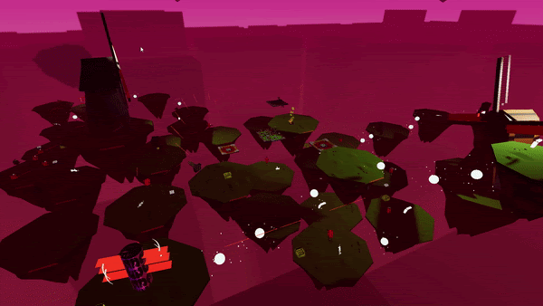

Jackson Clayton
Game Designer/Developer



Development Timeline:
I started Flying Frags World Tour thinking it would be a sequel for the original but it quickly inflated until it became a new game that completely abandoned the codebase of the first game.
The first Flying Frags was very straightforward. I never implemented any new mechanics that weren’t weapons or enemies. I tried to go for a much more robust and dynamic campaign with World Tour, while not throwing off the player. I tried doing this by teaching the player different core elements with each world. Combat, platforming, air-control, and the final world is a test of everything you have learned.
This game took around 9 months to complete, I had gained a lot of experience in coding, modeling, and learning my way around Unity during that time.
Most of the struggle with this game happened during the first four months of production. I was struggling to find a foothold for how I wanted the game to play and kept adding and removing mechanics. I couldn’t figure out how to evolve the formula of the first game without making it too complex or different. The first game had come so naturally, so it was hard to put into words how it played. Once I finally figured it out the level design went pretty smoothly, but I combed through all the 25 levels around 10 times each time adding more to each level to increase the playtime and further explore the mechanics I introduce at each level.
My final addition was a custom map editor. I specifically wanted to make a compiler and decompiler that could create the maps out of a string. It surprisingly only took me around a day to do, but I think it helped extend its playtime. Custom map editors are what got me into game design in the first place so I thought it was a good way to possibly help other people.
Development Focus:
I wanted to have a large focus on level design in World Tour, I spent a lot of time researching other developers and studios and their level design philosophies. I think I was able to convey a lot more in the levels then I did in previous projects when it comes to introducing mechanics, explaining events, and teaching/testing the player.
I also wanted to change my artistic direction in World Tour from a cartoony game to a much more atmospheric one.